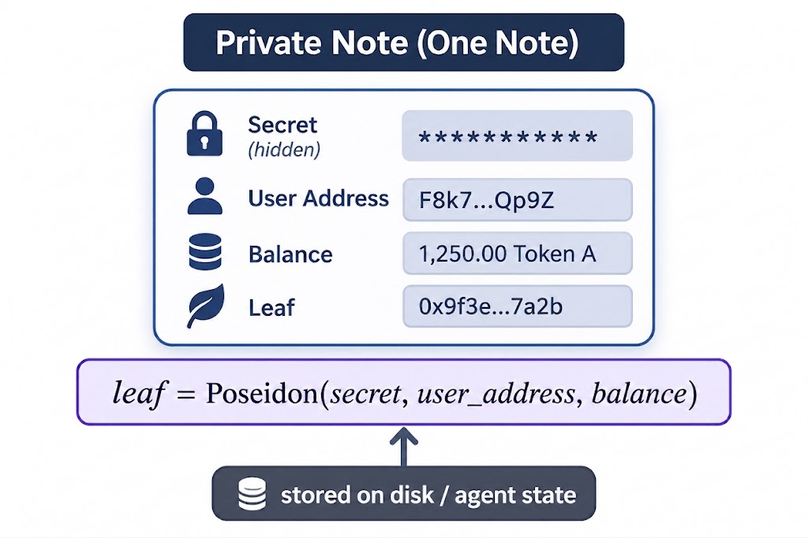
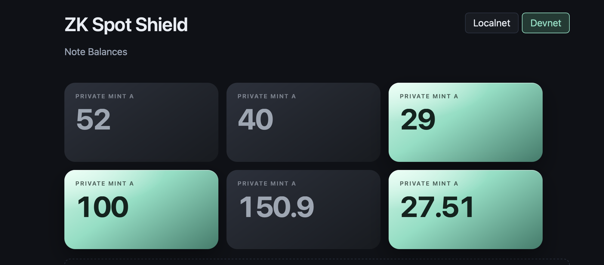
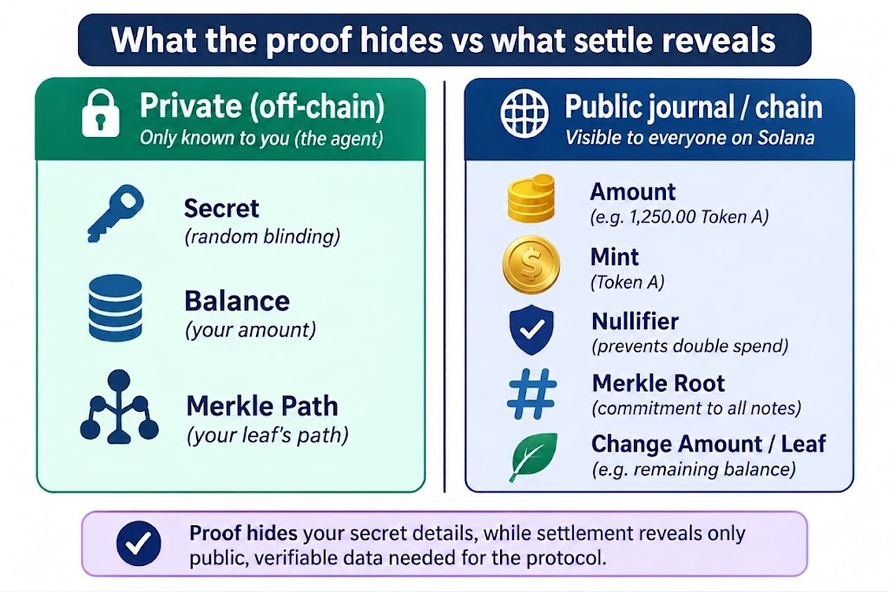

Private Agentic Payments on Solana (x402, MPP, and friends)
Part 1 of 3. Repo: zk-spot-shield.
Background
Popular social apps and other web apps increasingly deploy AI agents that — besides image, text, programming, and the rest — can pay and transfer value.
Protocols such as x402 (#Coinbase), MPP (#Stripe), and Google’s agent-payments line (AP2 — name may shift; same idea) have been revived so that AI agents working through browsing and other processes can discover a Payment Required response with HTTP 402, then act to fulfill the payment.
In this part of the trio, we cover how zk-spot-shield can demonstrate agentic payments that:
- Can hit and parse a 402 protocol request and response
- Spend a private note backed by real tokens such as USDC (privacy via zero-knowledge proofs)
- Can fulfill the payment on a blockchain (in this demo we use Solana)
- Prevent the obvious failures: fake notes and double-spend
- Finally give the user change, usable as another private note
Depositing real tokens and creating private notes
We kick off the application by asking the AI agent to deposit some Token A from its wallet (we have pre-minted some Token A into that wallet so the agent can deposit into the app).
Once tokens are sent and deposited into the app vault, a note is generated on disk / browser-side state (the client’s machine) — that is, we save secret, balance, mint, and leaf + a Poseidon hash of the said ingredients (see the illustration below):
leaf = Poseidon(secret, user_address, balance)

leaf is calculated from those valuesThat leaf identifies the note without revealing the private details. (In upcoming Part 3 we discuss note backup if disk/cache is cleaned.)
Congrats — notes are now available to be spent! We can check the UI by typing balance in the AI agent menue; this way the UI page will open and we see all notes and balances.

Note: Upon first-time depositing, the user wallet is on the blockchain — it says this user deposited this much token into the zk-spot-shield app… and this is the only time the agent can be linked that way on-chain.
In contrast, future spending of notes will hide association to the agent wallet. Explorers on chain will only see some transaction that includes some amounts, with no clear idea who sent it.
A good question would be: what about the recipient address of the Token B? Is that revealed on-chain when tokens are sent? This is a valid question, and we cover some strategies to obscure that in Part 3.
Buy flow: from 402 to proof, verify, and settle
What is 402?
Think of HTTP 402 as a polite “pay first” gate. The agent tries to buy something (or do anything that costs money). The seller does not hand over the goods yet — it answers with 402 Payment Required and a small quote: how much, and which token (amount + mint). The agent reads that quote, then pays by spending a private note instead of blasting a normal, fully public wallet transfer.
1. Pick a note
When the agent chooses to pay, we pick the smallest unspent note whose balance covers the quote. If none exists, we error out: not enough balance — deposit more Token A.
2. Prove
This is the zero-knowledge part of the flow — where the proof is built. A ZK circuit’s job is to produce a proof that someone else can verify without seeing the private inputs.

Private inputs (the witness — never put on-chain as plaintext):
secret user_address balance requested_swap_amount asset_id_mint expected_root merkle_path # 20 siblings + left/right flags
Two roles show up in ZK tooling:
- Guest — the small program that runs inside the zkVM. It checks the private rules (enough balance, real Merkle path, and so on) and commits the public journal. Think of it as the exam taker working in a sealed room.
- Host — the normal app on your machine (or a proving network) that feeds the guest its inputs and asks for a proof. Think of it as the proctor who packs the sealed room and later asks for the certificate.
Inside the guest, roughly:
- Solvency / conservation — balance covers the spend; change + spend = old balance.
-
This note is not fake! Someone could invent a note on their laptop and try to spend it. So we need a way to show this note really belongs to the set the app already committed to — not a random fake.
A few ways people solve that:
- A. Publish every note on-chain — simple to check, but expensive, and it leaks the whole roster.
- B. Ask a trusted server — “is this note real?” — cheap for the chain, but you have to trust that server (and it becomes a privacy hotspot).
- C. Commit to one short fingerprint of the whole set — then prove membership against that fingerprint. Smaller on-chain, no full dump.
We chose C: a technique called Merkle inclusion. Very roughly: notes are hashed into a tree; the tip of that tree is one short root. To spend, you prove your note sits under a registered root with a short path of sibling hashes — not by dumping every note on-chain. If it matches the root, it is real membership: this note is a valid entity in the app. Otherwise, it is a fake note (to effectively fetch Merkle state, find the next free slot, and prevent races, we will have a deeper dive in the upcoming Part 3 article).
- Prevent double-spend — here a technique called a nullifier is used. Roughly: each spend must leave a unique “already used” stamp on-chain. The guest builds that stamp with Poseidon:
nullifier = Poseidon(secret, leaf, asset_id_mint)
Same note → same stamp every time; a different note → a different stamp.
Public journal:
requested_swap_amount asset_id_mint nullifier merkle_root change_amount change_leaf
Now that we have the host and guest circuit, where is it run since it is super computation heavy?
Does the agent run the heavy prove on its own machine? Usually no — ZK proving is computationally heavy, and client machines often run out of memory (OOM). This demo path uses our ZK circuit ELF uploaded to the Succinct compute network. In our Devnet runs that cost about ~$0.39 in $PROVE and took on the order of ~40–50 seconds for proof generation to finish.
3. Verify and settle on Solana
- Verify the proof on-chain (the Solana program verifies the Groth16 proof against the program verifying key)
- Journal Merkle root is a registered clean-funds root
- Nullifier unused → create nullifier PDA
- Vault pays Token B to recipient ATA
- If change > 0, record change leaf
Note: settle still needs a Solana fee payer for the transaction. The agent can self-submit (its wallet pays SOL), or hand the signed settle to a relayer that sponsors the fee. The relayer is optional fee sponsorship — not the note owner, and not what unlocks the 402 (that comes next).
4. Change note
If the note you spent was bigger than the quote, the leftover is not thrown away. The circuit binds a new remainder — journal fields change_amount and change_leaf — and that becomes another private note (same secret family, new leaf for the leftover balance). The UI shows it as an extra card under Note Balances. If you spent the whole note (change_amount = 0), there is no change card.
5. Unlock 402
Settle alone does not open the seller’s resource. After the on-chain tx lands, the agent posts the journal to the relayer:
POST /402/pay
For the shielded path, the unlock key is the nullifier, not the payer wallet — so the receipt is not “this pubkey paid.” The merchant checks that nullifier (and the rest of the payment ack), then unlocks whatever the original 402 was guarding.
What this part leaves for later
- Part 2: Technical Deep Dive — Solana/Anchor architecture; a brief note on libraries used for ZK
- Part 3 (upcoming): Further Improvements and Resiliency — more privacy in sending and receiving, note backups, faster Merkle tree fetch with an indexer